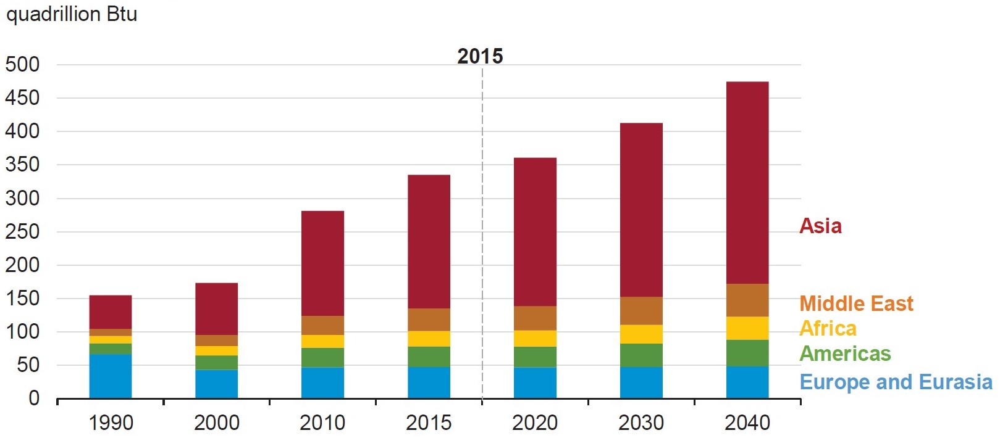
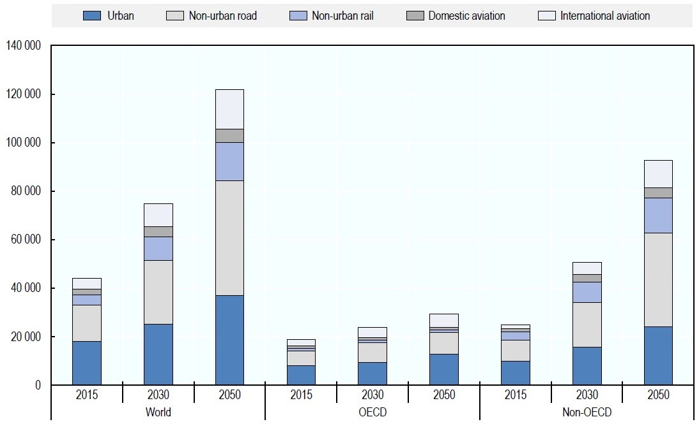
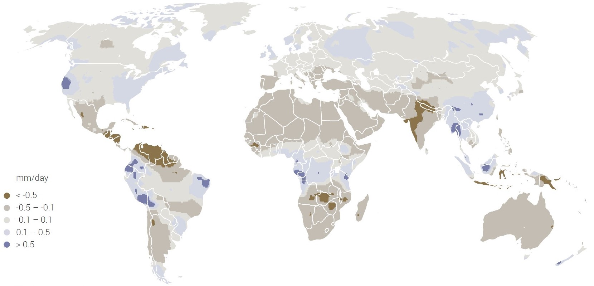
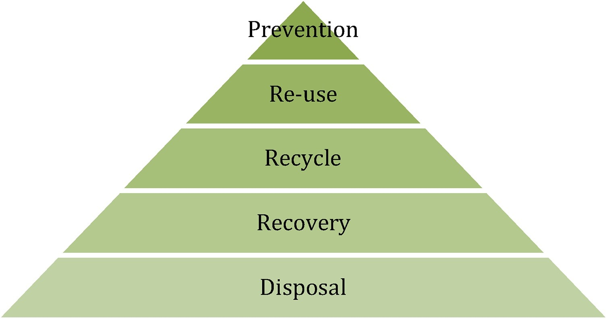
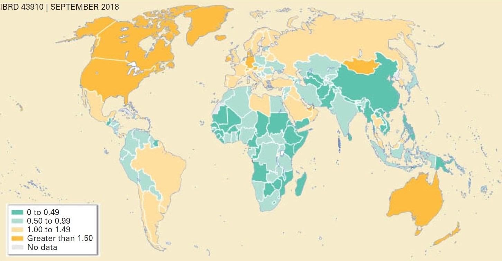

In this mini-lecture we describe important features of future demand for four main infrastructure sectors: energy, transportation, water and solid waste.
Now, we will take a first look at demand challenges across different infrastructure sectors. Energy is an input in almost all goods and services we need, starting with the production of food, through heating, cooking, lighting, communications and transportation (Baruah et al. 2016). Our current energy system is also one of the main factors of climate change; therefore, the future challenges of meeting the energy demand sustainably are huge and considered in the Sustainable Development Goal (SDG) 7 “Affordable and Clean Energy.” The growing level of industrialisation, technological advancement and population growth will increase demand and challenge the global energy systems. This increase will be more notorious in developing economies throughout the first stages of industrialisation. For instance, some energy forecasts predicted that energy consumption in non-OECD (Organisation for Economic Co-operation and Development) countries will increase by 41% between 2015 and 2040, in contrast to a 9% increase in OECD countries (U.S. Energy Information Administration 2017). Figure 4.2.1 shows the disaggregated demand of non-OECD consumption, with Asia being the region with the highest increase.

Figure 4.2.1 Forecasted Non-OECD energy consumption (U.S. Energy Information Administration 2017)
Looking to the near future, the electrification of transport is expected to restructure the global energy demand, reducing fossil fuel consumption and pushing electricity demand even further. On the other hand, environmental consciousness can potentially reduce our energy consumption through the selection of more efficient appliances or renewable energy sources. In this respect, there are a variety of demand interventions and regulations that can be used, which will be reviewed in Lecture 6.
Transportation systems can comprise roads, railways, airports, ports, and all related infrastructure. The vehicles that transit on these networks are not part of the infrastructure system, but they are crucial elements impacting on its performance. For example, carbon emissions of the system depend on vehicles’ fuel type and consumption (Blainey and Preston 2016). Some transportation networks are usually congested at peak hours due to commuting travel within a city, and between the city and other suburban settlements. To reduce this congestion, transportation managers try to improve the efficiency of the system by using better scheduling of public transport or policies such as road pricing. However, more often than not, expansion of the transportation infrastructure is required to serve the increasing demand. One of the features of transportation systems is the so-called phenomenon of induced demand, which is the auto-generated demand produced by the capacity expansion (Cervero and Hansen 2002). Transportation demand is expected to increase due to population growth and the need for more interconnected urban centres. Some trends can challenge and modify this demand, such as the potential use of automated vehicles or an increase in working from home. On the other hand, the demand for different transportation modes might change towards more sustainable mobility (e.g. bikes) or public transport if the adequate incentives are given in the planning process. Figure 4.2.2 shows a forecast of different types of transportation towards 2050. It can be seen that most of the increase will be in non-OECD countries.

Figure 4.2.2 Demand for passenger transport by type (ITF 2019)
Water use has been increasing worldwide at a rate of 1% annually since the 1980s, driven by population growth, socio-economic development and consumption patterns (UNESCO World Water Assessment Programme 2019). This global demand is expected to grow by 20% to 30% until 2050 in comparison with current water use (Burek et al. 2016).
Future trends will challenge our ability to provide safe water, particularly considering that we haven’t even been able to meet current water demand. Approximately four billion people experience severe water scarcity at least one month of the year (Mekonnen and Hoekstra 2012), two billion do not have access to safely-managed drinking water and 785 million lack basic services (WHO/UNICEF 2019).
Future options to meet water demand in the developing world include making the system more efficient, for example, by reducing water losses, increasing the reuse, and recycling wastewater. Developing countries have estimated water losses of about 40% to 50%, mainly due to physical deterioration and unauthorised connections (Kingdom, Liemberger, and Marin 2006). On the other hand, developed countries are increasingly using tertiary treatment of wastewater, reducing pollution and producing a new form of water supply.
The supply side of water will also be challenged by climate change. Figure 4.2.3 shows the expected change in net precipitation by 2050. While an increment in precipitation will increase the risk of flooding and erosion, a decrease will reduce our ability to supply water.

Figure 4.2.3 Change in net precipitation, 2010–2050 (UNESCO World Water Assessment Programme 2019)
We produce solid waste from our daily activities and a poor waste management can contaminate our environment and oceans and can cause respiratory problems and spread diseases. Solid waste management is typically provided at the municipality level, and consists of collection, transfer stations, processing facilities, landfills and incinerators (Watson et al. 2016). Current waste management policies prioritise a more circular economy approach by reusing, recycling and recovering waste based on the widespread waste hierarchy which was included in SDG 12 “Responsible Consumption and Production” (Pires and Martinho 2019). Figure 4.2.4 shows this waste hierarchy in which different waste management options are prioritised according to their degree of sustainability. Prevention is considered the most preferred option while disposal is the least preferred.

Figure 4.2.4 Waste Hierarchy (Bugge, Fevolden, and Klitkou 2019)
However, our waste management systems still depend on landfills, given the huge amount of waste disposed in previous decades and the challenge of reusing, recycling and recovering most of our waste stream. This is more profound in low-income countries in which 93% of waste is dumped (Kaza et al. 2018) given that they lack waste treatment processes and good segregation systems. Current technologies are recovering resources and energy (methane) from landfills, helping to reduce the need for raw materials.
Waste generation is correlated with economic development, as shown in Figure 4.2.5, therefore it’s not surprising that waste generation in low and middle-income countries is expected to increase by 40% by 2050 (Kaza et al. 2018). On the other hand, future waste management demand will probably entail more electronic and chemical waste, which needs to be managed carefully by using proper treatment and hazardous disposal facilities.

Figure 4.2.5: Waste Generation per capita (kg) (Kaza et al. 2018)
In this mini-lecture we have explored the differences between four of the main important infrastructure sectors in terms of their future demand. We also reviewed current states of demand and highlighted how current challenges can persist or increase into the future. It is important to note that these four infrastructure sectors will not necessarily be the most important in every location, for instance, digital communications are now a critical sector for international development.
Other contexts might consider irrigation (e.g. agriculture-based economies) or ports (e.g. islands) as vital infrastructure systems that need special attention. Furthermore, some countries are including health and educational services in their infrastructure plans, which imply further differing challenges and approaches.
It’s important to note that different sectors have different demand trends so different strategies might apply. On the other hand, most of the sectors have interdependencies between them, so collaborative plans and system-of-systems thinking will provide great value for infrastructure planners.